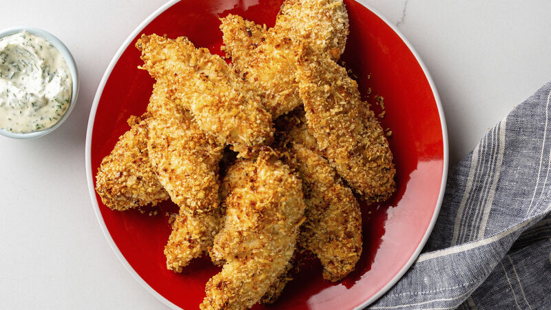

Chicken Tenders

Healthy Air-Fryed Chicken Tenders
Have you ever craved some fresh and juicy chicken tenders but felt too guilty because of all the oil? Well fear not, these tenders are high protein and great to eat on any occasion!
Ingriedients
- Chicken tenderloins
- Panko breadcrumbs
- Eggs
- Olive oil Spray
Steps
- First prep your chicken on a safe working area.
- Next crack 3-4 eggs into a bowl and scramble to create an egg wash.
- Then fill another bowl with the panko>
- Now dredge the chicken in the eggs, then into the panko until all chicken is covered.
- lastly place the chicken into air fryer and spray with olive oil, cook at 400 degrees for 10 minutes then enjoy!